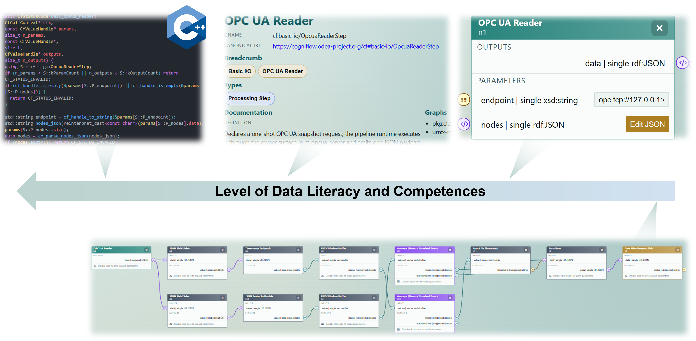
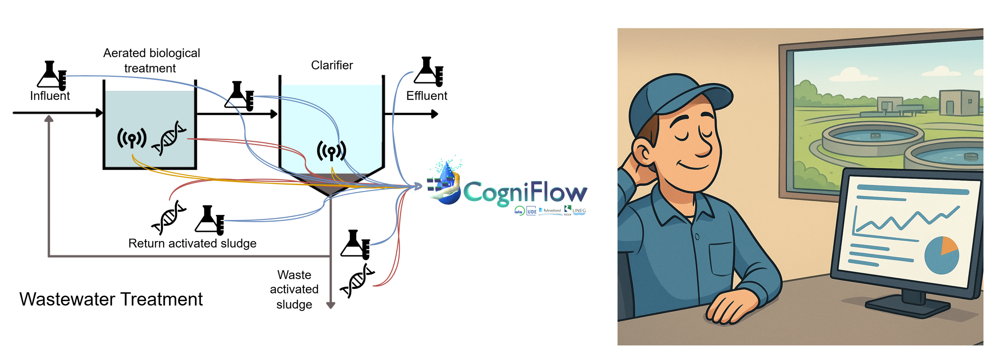
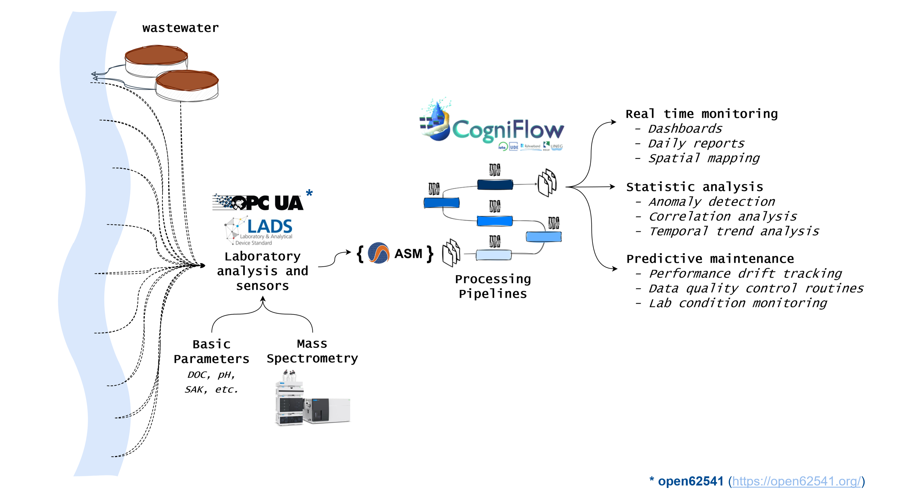

CogniFlow
Ontology-driven standardization
for FAIR data processing
Ricardo Cunha
Institut für Umwelt & Energie, Technik & Analytik e. V. (IUTA)
cunha@iuta.de
Gerrit Renner
University of Duisburg-Essen, Instrumental Analytical Chemistry, TC Schmidt Lab
gerrit.renner@uni-due.de
https://elearning.odea-project.org/cogniflow_workshop.html
Institut für Umwelt & Energie, Technik & Analytik e. V. (IUTA)
cunha@iuta.de
Gerrit Renner
University of Duisburg-Essen, Instrumental Analytical Chemistry, TC Schmidt Lab
gerrit.renner@uni-due.de
https://elearning.odea-project.org/cogniflow_workshop.html
Laboratory of the Future by Thorsten Teutenberg
Provides essential information and guidance on the practical implementation of digitisation and automation topics at all stages of the laboratory value chain.
ISBN: 978-3-527-35265-4


Associated Partners


Software stack possibilities
Framework

Python

Java

R

Ruby

Go
Algorithms

C++

Rust

C#
Python

Julia
Semantics

Apache Jena

RDFLib

Blazegraph

RDF4J
Graphical User Interface

Streamlit

Shiny

JavaScript

TypeScript

React

Qt

Unreal Engine
Selected Implementation Stack
Framework
Python
Algorithms
C++
Semantics
Apache Jena
Graphical User Interface
JavaScript
TypeScript
React
Python implementation challenge
PACKAGE-A
package_A/ | pyproject.toml | package_A/ | __init__.py | module.py
Python implementation challenge
PACKAGE-A
package_A/ | pyproject.toml | package_A/ | __init__.py | module.py
PACKAGE-B
package_B/
| pyproject.toml
| package_B/
| __init__.py
| module.py
from package_A import module
Python implementation challenge
PACKAGE A
package_A/ | pyproject.toml | package_A/ | __init__.py | module.py
A
PACKAGE B
package_B/
| pyproject.toml
| package_B/
| __init__.py
| module.py
from package_A import module
A
PACKAGE C
package_C/
`-- from package_A import x
B
PACKAGE D
package_D/
`-- from package_B import x
BC
PACKAGE E
package_E/ |-- from package_B import x `-- from package_C import x
AD
PACKAGE F
package_F/ |-- from package_A import x `-- from package_D import x
E
PACKAGE G
package_G/
`-- from package_E import x
BF
PACKAGE H
package_H/ |-- from package_B import x `-- from package_F import x
CG
PACKAGE I
package_I/ |-- from package_C import x `-- from package_G import x
EH
PACKAGE J
package_J/ |-- from package_E import x `-- from package_H import x
DI
PACKAGE K
package_K/ |-- from package_D import x `-- from package_I import x
J
PACKAGE L
package_L/
`-- from package_J import x
AHK
PACKAGE M
package_M/ |-- from package_A import x |-- from package_H import x `-- from package_K import x
FL
PACKAGE N
package_N/ |-- from package_F import x `-- from package_L import x
GM
PACKAGE O
package_O/ |-- from package_G import x `-- from package_M import x
BNO
PACKAGE P
package_P/ |-- from package_B import x |-- from package_N import x `-- from package_O import x
The real challenges
Missing standardisation
Limited traceability and extensibility
Graphical User Interface



--:--